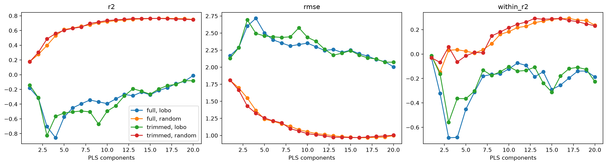
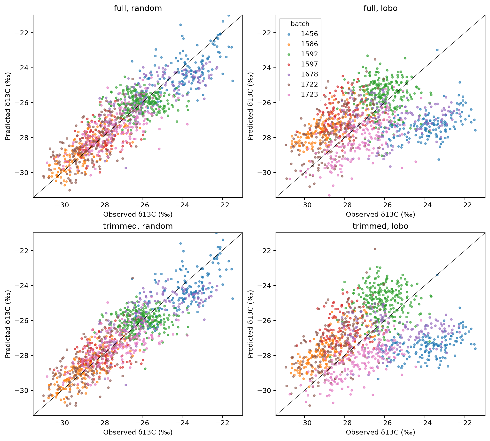
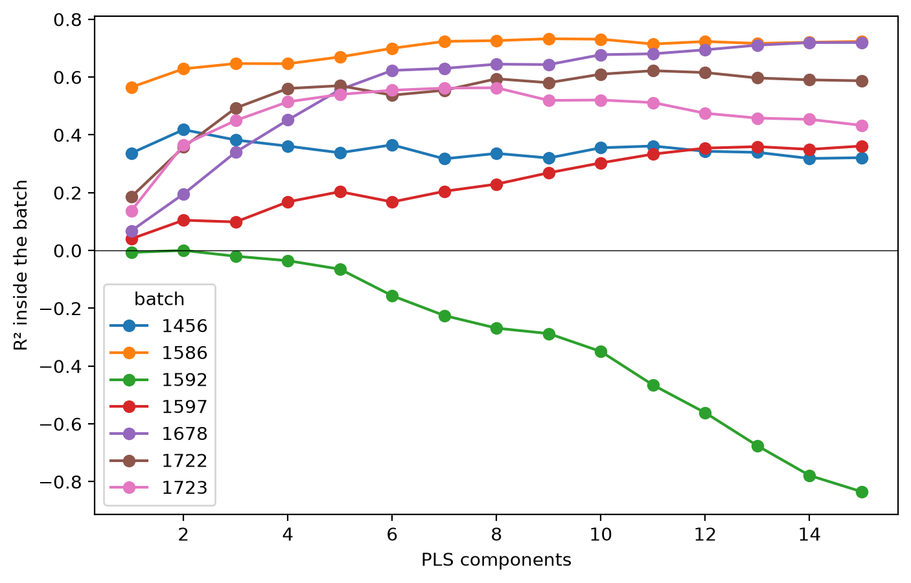

import numpy as np, pandas as pd, matplotlib.pyplot as plt
from sklearn.cross_decomposition import PLSRegression
from sklearn.metrics import r2_score, root_mean_squared_error
from sklearn.model_selection import StratifiedKFold, KFold, LeaveOneGroupOut, cross_val_predict
from sklearn.pipeline import make_pipeline
from soilspectfm.all import *
from fastcore.test import *
from cassava.data import *PLS baseline
PLS regression of δ13C on SNV and first-derivative spectra, scored on random and leave-one-batch-out splits
This notebook fits a PLS regression baseline and scores it in three ways. A random split stratified by batch tests predictions for new samples from batches the model has seen. Leave-one-batch-out tests predictions for a batch the model has never seen. The within-batch R² measures how well the model ranks samples inside each batch.
Batch alone explains 68% of the δ13C variance (see the EDA notebook). A random-split R² near 0.68 therefore shows no skill beyond recognising the batch.
d = load_data('../data')Metrics
def within_r2(
y, # Observed values
yhat, # Predicted values
groups, # Group of each sample
):
"R² of `yhat` against `y` after centring both on their group means"
yc, pc = (pd.Series(v).groupby(np.asarray(groups)).transform(lambda s: s - s.mean()) for v in (y, yhat))
return 1 - ((yc - pc)**2).sum() / (yc**2).sum()A model that predicts only the batch means scores a high R² and a within-batch R² of 0:
y, g = np.array([1., 2, 5, 6]), np.array(['a', 'a', 'b', 'b'])
means = np.array([1.5, 1.5, 5.5, 5.5])
test_eq(within_r2(y, means, g), 0)
r2_score(y, means)0.9411764705882353def metrics(
y, # Observed values
yhat, # Predicted values
groups, # Group of each sample
) -> dict:
"R², RMSE and within-group R² of `yhat` against `y`"
return dict(r2=r2_score(y, yhat), rmse=root_mean_squared_error(y, yhat), within_r2=within_r2(y, yhat, groups))def per_batch(
y, # Observed values
yhat, # Predicted values
groups, # Group of each sample
) -> pd.DataFrame:
"Sample count, RMSE, bias, R², within-group R² and correlation of `yhat` against `y` in each group"
rows = {}
for b in np.unique(groups):
m = groups == b
yb, pb = y[m], yhat[m]
fit = dict(r2=r2_score(yb, pb), within_r2=within_r2(yb, pb, groups[m]), r=np.corrcoef(yb, pb)[0, 1])
rows[b] = dict(n=m.sum(), rmse=root_mean_squared_error(yb, pb), bias=(pb - yb).mean(), **fit)
return pd.DataFrame(rows).TModel
The pipeline first keeps the wavenumbers up to w_max. It then applies SNV, a Savitzky-Golay first derivative with a 15-point window and a cubic polynomial, and PLS regression. PLS runs with scale=False, because all the features are absorbances on one scale.
The notebook compares two versions of the spectra. full keeps every wavenumber. trimmed drops everything above 3550 cm⁻¹, which removes the water vapour region found in the EDA notebook.
def pls(
n, # Number of PLS components
ws, # Wavenumbers (cm⁻¹)
w_max=None, # Highest wavenumber to keep (cm⁻¹); `None` keeps all
):
"Trim, SNV, Savitzky-Golay first derivative and PLS regression with `n` components"
return make_pipeline(Trim(ws, w_max=w_max), SNV(), SavitzkyGolay(deriv=1), PLSRegression(n_components=n, scale=False))Splits
The random split uses 5 folds, stratified by batch so that each fold holds the same share of every batch. Leave-one-batch-out uses 7 folds, one per batch.
skf = StratifiedKFold(5, shuffle=True, random_state=0)
splits = dict(random=list(skf.split(d.X, d.batch)), lobo=list(LeaveOneGroupOut().split(d.X, groups=d.batch)))Number of components
Out-of-fold predictions for 1 to 20 components, for each version of the spectra and each split:
ns = range(1, 21)
spectra = dict(full=None, trimmed=3550)
preds = {}
for s, w in spectra.items():
for k, cv in splits.items():
for n in ns: preds[s, k, n] = cross_val_predict(pls(n, d.ws, w), d.X, d.y, cv=cv, n_jobs=-1).ravel()
res = pd.DataFrame([dict(spectra=s, split=k, n=n, **metrics(d.y, p, d.batch)) for (s, k, n), p in preds.items()])fig, axs = plt.subplots(1, 3, figsize=(15, 4), layout='constrained')
for ax, m in zip(axs, ('r2', 'rmse', 'within_r2')):
for (s, k), g in res.groupby(['spectra', 'split']): ax.plot(g.n, g[m], marker='o', label=f'{s}, {k}')
ax.set(xlabel='PLS components', title=m)
axs[0].legend();
The number of components with the lowest RMSE, for each version of the spectra and each split, is below. The same folds choose the number of components and score the model, which makes these scores slightly optimistic.
best = res.loc[res.groupby(['spectra', 'split']).rmse.idxmin()].set_index(['spectra', 'split'])
best.round(3)| n | r2 | rmse | within_r2 | ||
|---|---|---|---|---|---|
| spectra | split | ||||
| full | lobo | 20 | -0.011 | 2.005 | -0.188 |
| random | 17 | 0.765 | 0.966 | 0.293 | |
| trimmed | lobo | 19 | -0.081 | 2.073 | -0.126 |
| random | 15 | 0.764 | 0.968 | 0.289 |
Results by batch
Leave-one-batch-out results for each held-out batch, at the best number of components for each version of the spectra. The r2 column counts the bias as error. The within_r2 column removes the bias first. The r column is the correlation between observed and predicted values inside the batch. It measures only the order of the predictions, and ignores both their level and their spread.
pb = {s: per_batch(d.y, preds[s, 'lobo', int(best.loc[(s, 'lobo'), 'n'])], d.batch) for s in spectra}
pd.concat(pb, axis=1).round(2)| full | trimmed | |||||||||||
|---|---|---|---|---|---|---|---|---|---|---|---|---|
| n | rmse | bias | r2 | within_r2 | r | n | rmse | bias | r2 | within_r2 | r | |
| 1456 | 149.0 | 3.62 | -3.45 | -8.14 | 0.13 | 0.42 | 149.0 | 3.76 | -3.59 | -8.87 | 0.13 | 0.41 |
| 1586 | 168.0 | 1.58 | 1.41 | -1.53 | 0.48 | 0.70 | 168.0 | 1.36 | 1.17 | -0.88 | 0.50 | 0.73 |
| 1592 | 244.0 | 1.39 | 0.45 | -1.66 | -1.39 | -0.03 | 244.0 | 1.69 | 1.13 | -2.96 | -1.21 | 0.01 |
| 1597 | 97.0 | 1.84 | 1.46 | -4.62 | -1.08 | 0.12 | 97.0 | 2.01 | 1.62 | -5.70 | -1.34 | 0.04 |
| 1678 | 144.0 | 2.32 | -1.38 | -1.06 | -0.33 | 0.04 | 144.0 | 2.10 | -1.11 | -0.69 | -0.21 | 0.06 |
| 1722 | 177.0 | 1.48 | 0.90 | -0.81 | -0.15 | 0.58 | 177.0 | 1.63 | 1.13 | -1.19 | -0.14 | 0.62 |
| 1723 | 179.0 | 1.33 | -0.78 | -0.11 | 0.27 | 0.61 | 179.0 | 1.41 | -0.99 | -0.25 | 0.37 | 0.63 |
Within-batch R² of each held-out batch at 3, 5, 10 and 20 components, for each version of the spectra:
pd.DataFrame({(s, n): per_batch(d.y, preds[s, 'lobo', n], d.batch).within_r2 for s in spectra for n in (3, 5, 10, 20)}).round(2)| full | trimmed | |||||||
|---|---|---|---|---|---|---|---|---|
| 3 | 5 | 10 | 20 | 3 | 5 | 10 | 20 | |
| 1456 | 0.22 | 0.17 | -0.06 | 0.13 | 0.08 | 0.10 | -0.18 | 0.13 |
| 1586 | 0.21 | 0.04 | 0.38 | 0.48 | 0.16 | 0.02 | 0.35 | 0.49 |
| 1592 | -5.31 | -2.15 | -0.94 | -1.39 | -3.32 | -0.78 | -0.92 | -1.50 |
| 1597 | -2.11 | -1.98 | -1.81 | -1.08 | -1.60 | -2.90 | -2.01 | -1.53 |
| 1678 | -0.34 | -0.63 | -0.33 | -0.33 | -0.16 | -0.73 | -0.20 | -0.36 |
| 1722 | 0.12 | 0.15 | 0.19 | -0.15 | 0.05 | -0.05 | 0.20 | -0.21 |
| 1723 | 0.21 | -0.06 | 0.43 | 0.27 | -0.52 | 0.09 | 0.49 | 0.31 |
Observed against predicted
fig, axs = plt.subplots(2, 2, figsize=(10, 9), layout='constrained')
lims = d.y.min() - 0.5, d.y.max() + 0.5
for row, s in zip(axs, spectra):
for ax, k in zip(row, splits):
p = preds[s, k, int(best.loc[(s, k), 'n'])]
for b in np.unique(d.batch): ax.scatter(d.y[d.batch == b], p[d.batch == b], s=8, alpha=0.6, label=b)
ax.plot(lims, lims, color='k', lw=0.5)
ax.set(title=f'{s}, {k}', xlabel='Observed δ13C (‰)', ylabel='Predicted δ13C (‰)', xlim=lims, ylim=lims)
axs[0, -1].legend(title='batch');
Within-batch models
The global models above learn the batch levels and the variation inside batches together. The two models below learn only the variation inside batches. A local model is fitted on one batch and cross-validated inside it. The pooled model is fitted on all batches at once, after each batch is centred on its own mean spectrum and mean δ13C.
Both models need δ13C measurements from the batch they predict. The local model needs them for training. The pooled model needs them to set the batch level. Their scores show whether the spectra carry δ13C information once the batch effect is removed.
SNV and the Savitzky-Golay derivative act on each spectrum on its own, so they run once on all samples, before any split:
Xp = make_pipeline(SNV(), SavitzkyGolay(deriv=1)).fit_transform(d.X)Local models
Each batch gets 5-fold cross-validation inside it, for 1 to 15 components:
kf = KFold(5, shuffle=True, random_state=0)
local = {}
for b in np.unique(d.batch):
m = d.batch == b
for n in range(1, 16): local[b, n] = cross_val_predict(PLSRegression(n, scale=False), Xp[m], d.y[m], cv=kf).ravel()
lres = pd.DataFrame([dict(batch=b, n=n, r2=r2_score(d.y[d.batch == b], p)) for (b, n), p in local.items()])fig, ax = plt.subplots(figsize=(8, 5))
for b, g in lres.groupby('batch'): ax.plot(g.n, g.r2, marker='o', label=b)
ax.axhline(0, color='k', lw=0.5)
ax.set(xlabel='PLS components', ylabel='R² inside the batch')
ax.legend(title='batch');
The best number of components for each local model. Choosing it on the same folds makes these scores slightly optimistic:
lbest = lres.loc[lres.groupby('batch').r2.idxmax()].set_index('batch')
lbest.round(2)| n | r2 | |
|---|---|---|
| batch | ||
| 1456 | 2 | 0.42 |
| 1586 | 9 | 0.73 |
| 1592 | 2 | 0.00 |
| 1597 | 15 | 0.36 |
| 1678 | 15 | 0.72 |
| 1722 | 11 | 0.62 |
| 1723 | 8 | 0.56 |
Pooled within-batch model
pooled_within computes the batch means on the training samples of each fold, and applies them to the test samples of that fold. The test samples never contribute to the means.
def pooled_within(
X, # Preprocessed spectra, one per row
y, # Observed values
groups, # Group of each sample
cv, # List of `(train, test)` index pairs
n, # Number of PLS components
):
"Out-of-fold predictions of a PLS model fitted on group-centred spectra and values"
p = np.zeros(len(y))
for tr, te in cv:
mx = pd.DataFrame(X[tr]).groupby(groups[tr]).mean()
my = pd.Series(y[tr]).groupby(groups[tr]).mean()
pls_ = PLSRegression(n, scale=False).fit(X[tr] - mx.loc[groups[tr]].values, y[tr] - my[groups[tr]].values)
p[te] = pls_.predict(X[te] - mx.loc[groups[te]].values).ravel() + my[groups[te]].values
return pOut-of-fold predictions on the random split, for 1 to 20 components:
pooled = {n: pooled_within(Xp, d.y, d.batch, splits['random'], n) for n in ns}
pres = pd.DataFrame([dict(n=n, **metrics(d.y, p, d.batch)) for n, p in pooled.items()])
pbest = pres.loc[pres.rmse.idxmin()]
pbest.round(3)n 12.000
r2 0.809
rmse 0.871
within_r2 0.410
Name: 11, dtype: float64Comparison
Within-batch R² and correlation of each batch, for the global model on the random split, the best local model and the pooled model:
gp = per_batch(d.y, preds['full', 'random', int(best.loc[('full', 'random'), 'n'])], d.batch)
pp = per_batch(d.y, pooled[int(pbest.n)], d.batch)
lr = pd.Series({b: np.corrcoef(d.y[d.batch == b], local[b, int(lbest.n[b])])[0, 1] for b in lbest.index})
w = pd.DataFrame(dict(global_random=gp.within_r2, local=lbest.r2, pooled=pp.within_r2))
c = pd.DataFrame(dict(global_random=gp.r, local=lr, pooled=pp.r))
pd.concat(dict(within_r2=w, r=c), axis=1).round(2)| within_r2 | r | |||||
|---|---|---|---|---|---|---|
| global_random | local | pooled | global_random | local | pooled | |
| 1456 | 0.17 | 0.42 | 0.26 | 0.58 | 0.65 | 0.53 |
| 1586 | 0.57 | 0.73 | 0.66 | 0.77 | 0.86 | 0.81 |
| 1592 | -0.35 | 0.00 | -0.19 | 0.05 | 0.10 | 0.02 |
| 1597 | -0.49 | 0.36 | -0.13 | 0.25 | 0.66 | 0.33 |
| 1678 | 0.54 | 0.72 | 0.61 | 0.73 | 0.85 | 0.79 |
| 1722 | 0.30 | 0.62 | 0.51 | 0.69 | 0.79 | 0.77 |
| 1723 | 0.46 | 0.56 | 0.53 | 0.70 | 0.75 | 0.73 |